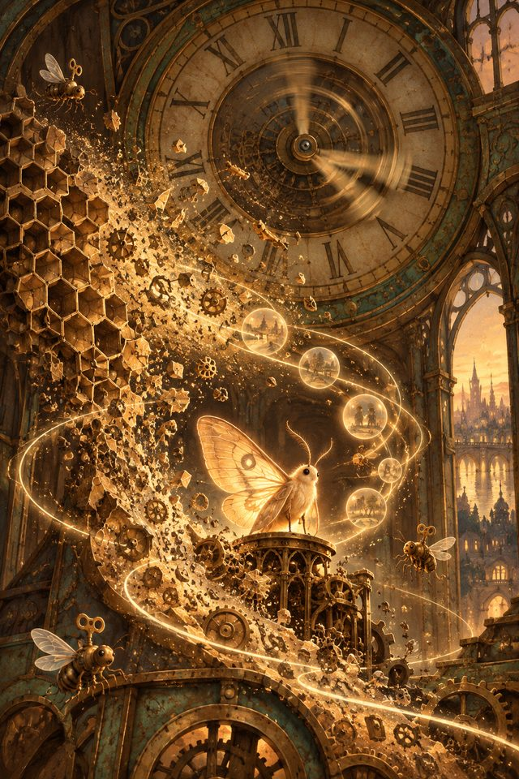
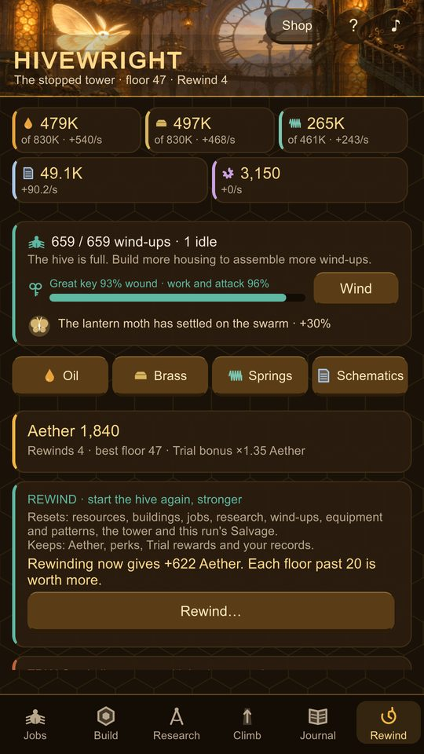

Rewind and perks
Wind time back from floor 20, keep your Aether, and spend it on permanent perks so every run climbs further.
On this page
A Rewind starts the hive again in exchange for Aether. It is the game's main loop: climb, Rewind, spend Aether on perks, and climb further next time. You can Rewind from floor 20.
What resets and what stays
| Resets | Stays |
|---|---|
| Resources, buildings, jobs and research | Aether |
| Wind-ups and equipment, including patterns | Perks |
| The tower: you start again on floor 1 | Trial rewards and your records |
| This run's Salvage | Curios, helpers, the Loft and the moth |
Standing Orders, if you have researched it, starts each run already learned.

The Rewind tab shows exactly what you will get before you confirm: Rewinding now gives X Aether. Each floor past 20 is worth more. It also shows what the Aether would buy.
How much Aether?
Aether grows with every floor you reach from floor 20, and each floor is worth 9% more than the one before it. On top of that you earn one Aether for each factor of ten of resources the run gathered. Trial bonuses, curios and the Loft multiply the total.
From floors alone (before those multipliers), a Rewind pays roughly:
| Floor reached | Aether from floors |
|---|---|
| 20 | 4 |
| 25 | 30 |
| 30 | 70 |
| 40 | 227 |
| 50 | 598 |
| 60 | 1,477 |
| 80 | 8,483 |
| 100 | 47,749 |
The curve is steep, so a few extra floors are worth more than the same time spent Rewinding early.
Tip Rewind when the next floors are slow. If you can still clear floors quickly, keep going; if the walls are taking an hour a floor, a Rewind and a handful of perks will carry you past them. Your tab shows how many perk levels the Aether would buy.
After your first Rewind, a run that has not yet reached floor 20 can be started over for nothing, with all perks, Trials, curios and records kept.
Perks
Perks are permanent upgrades bought with Aether in the Rewind tab. Each level multiplies its effect, and each level costs more than the last. The price is the first-level cost multiplied by the growth factor for every level you already own.
| Perk | Effect per level | Max level | First cost | Cost grows by |
|---|---|---|---|---|
| Deft Gathering | x1.2 to everything wind-ups gather | 200 | 3 | 27% |
| Sharp Swarm | x1.2 swarm attack | 200 | 3 | 27% |
| Tough Shells | x1.1 swarm health | 200 | 3 | 27% |
| Warm Hatchery | x1.2 assembly speed | 100 | 4 | 37% |
| Deep Stores | +25% Oil, Brass and Springs storage | 50 | 4 | 40% |
| Head Start | Each run starts with 2 more Cells and 50 more Oil and Brass | 10 | 6 | 60% |
| Long Rest | The hive keeps working 1 more hour while you are away | 8 | 5 | 50% |
| Taut Key | The key rests 5% tighter: about +2.5% work and attack even when you are away | 5 | 8 | 60% |
Taut Key is locked until you complete the Silent Key Trial.
Which perks first?
- Deft Gathering and Sharp Swarm are cheap and compound quickly. They carry most early Rewinds.
- Tough Shells helps when swarms fall on the way up.
- Warm Hatchery makes fallen swarms return sooner.
- Head Start makes the first minutes after every Rewind faster. It pays off the more you Rewind.
- Long Rest pays off if you leave the hive for long stretches.
Trials and the Rewind
After two Rewinds the Rewind tab opens Trials: challenge runs that bend one rule. A Trial starts with your next Rewind. Completing one permanently raises the Aether every Rewind pays.
Looking ahead
Past floor 100 a deeper reset appears, the Grand Winding. It has its own page, The Grand Winding, and contains spoilers.